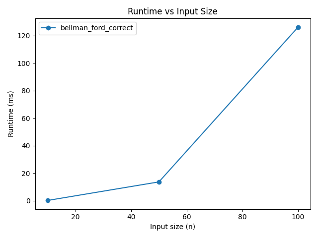
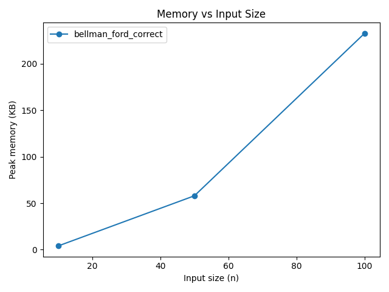
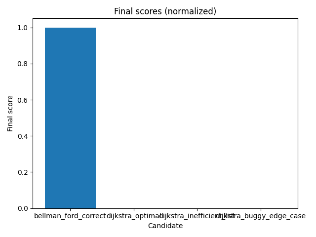

AutoAlgo — Comparison Report: comparison_001
Winner: bellman_ford_correct
Timestamp: 2025-09-05T17:12:56.526734
Git commit: N/A (tool unavailable)
Candidates (ranked)
| Rank | ID | Name | Correctness | Avg runtime ms | Avg mem KB | Final score |
| 1 |
bellman_ford_correct |
bellman_ford_correct |
1.0 |
46.620 |
98.30 |
1.0 |
| 2 |
dijkstra_optimal |
dijkstra_optimal |
0.0 |
inf |
inf |
0.0 |
| 3 |
dijkstra_inefficient_list |
dijkstra_inefficient_list |
0.0 |
inf |
inf |
0.0 |
| 4 |
dijkstra_buggy_edge_case |
dijkstra_buggy_edge_case |
0.0 |
inf |
inf |
0.0 |
Charts
Runtime vs Input Size

Memory vs Input Size

Final Scores

Per-candidate details
bellman_ford_correct — bellman_ford_correct
{
"avg_mem_kb": 98.29947916666667,
"avg_runtime_ms": 46.62049333176886,
"correctness": 1.0,
"final_score": 1.0,
"id": "bellman_ford_correct",
"mem_kb": {
"10": 4.0625,
"100": 232.8359375,
"50": 58.0
},
"name": "bellman_ford_correct",
"norm_correctness": 1.0,
"norm_memory": 1.0,
"norm_runtime": 1.0,
"pytest_output": "============================= test session starts =============================\nplatform win32 -- Python 3.13.7, pytest-8.4.2, pluggy-1.6.0\nrootdir: C:\\Users\\jooth\\Desktop\\Projects\nplugins: anyio-4.10.0, langsmith-0.4.15\ncollected 8 items\n\nAutoAlgo\\src\\problems\\shortest_path\\tests\\test_shortest_path.py ........ [100%]\n\n============================== 8 passed in 0.03s ==============================\n\n",
"runtime_ms": {
"10": 0.1226400025188923,
"100": 126.13148000091314,
"50": 13.607359991874546
}
}
dijkstra_optimal — dijkstra_optimal
{
"avg_mem_kb": Infinity,
"avg_runtime_ms": Infinity,
"correctness": 0.0,
"final_score": 0.0,
"id": "dijkstra_optimal",
"mem_kb": {},
"name": "dijkstra_optimal",
"norm_correctness": 0.0,
"norm_memory": 0.0,
"norm_runtime": 0.0,
"pytest_output": "============================= test session starts =============================\nplatform win32 -- Python 3.13.7, pytest-8.4.2, pluggy-1.6.0\nrootdir: C:\\Users\\jooth\\Desktop\\Projects\nplugins: anyio-4.10.0, langsmith-0.4.15\ncollected 8 items\n\nAutoAlgo\\src\\problems\\shortest_path\\tests\\test_shortest_path.py ......F. [100%]\n\n================================== FAILURES ===================================\n____________________________ test_negative_weights ____________________________\n\nfind_shortest_path_func = \u003cfunction find_shortest_path at 0x00000201BFB84400\u003e\n\n def test_negative_weights(find_shortest_path_func):\n \"\"\"\n Tests a graph with negative weights. Dijkstra\u0027s is not expected to work\n correctly here, so this tests if an algorithm can handle it or fails gracefully.\n A correct implementation (like Bellman-Ford) would find the path.\n \"\"\"\n graph = {\n \u0027A\u0027: {\u0027B\u0027: 1, \u0027C\u0027: 2},\n \u0027B\u0027: {},\n \u0027C\u0027: {\u0027D\u0027: 1},\n \u0027D\u0027: {\u0027B\u0027: -3}\n }\n # Correct path to B is A-\u003eC-\u003eD-\u003eB with cost 2+1-3=0\n # Dijkstra will find A-\u003eB with cost 1\n cost, path = find_shortest_path_func(graph, \u0027A\u0027, \u0027B\u0027)\n\u003e assert cost == 0\nE assert 1 == 0\n\nAutoAlgo\\src\\problems\\shortest_path\\tests\\test_shortest_path.py:122: AssertionError\n=========================== short test summary info ===========================\nFAILED AutoAlgo/src/problems/shortest_path/tests/test_shortest_path.py::test_negative_weights\n========================= 1 failed, 7 passed in 0.10s =========================\n\n",
"runtime_ms": {}
}
dijkstra_inefficient_list — dijkstra_inefficient_list
{
"avg_mem_kb": Infinity,
"avg_runtime_ms": Infinity,
"correctness": 0.0,
"final_score": 0.0,
"id": "dijkstra_inefficient_list",
"mem_kb": {},
"name": "dijkstra_inefficient_list",
"norm_correctness": 0.0,
"norm_memory": 0.0,
"norm_runtime": 0.0,
"pytest_output": "============================= test session starts =============================\nplatform win32 -- Python 3.13.7, pytest-8.4.2, pluggy-1.6.0\nrootdir: C:\\Users\\jooth\\Desktop\\Projects\nplugins: anyio-4.10.0, langsmith-0.4.15\ncollected 8 items\n\nAutoAlgo\\src\\problems\\shortest_path\\tests\\test_shortest_path.py ......F. [100%]\n\n================================== FAILURES ===================================\n____________________________ test_negative_weights ____________________________\n\nfind_shortest_path_func = \u003cfunction find_shortest_path at 0x000002A7FFEB42C0\u003e\n\n def test_negative_weights(find_shortest_path_func):\n \"\"\"\n Tests a graph with negative weights. Dijkstra\u0027s is not expected to work\n correctly here, so this tests if an algorithm can handle it or fails gracefully.\n A correct implementation (like Bellman-Ford) would find the path.\n \"\"\"\n graph = {\n \u0027A\u0027: {\u0027B\u0027: 1, \u0027C\u0027: 2},\n \u0027B\u0027: {},\n \u0027C\u0027: {\u0027D\u0027: 1},\n \u0027D\u0027: {\u0027B\u0027: -3}\n }\n # Correct path to B is A-\u003eC-\u003eD-\u003eB with cost 2+1-3=0\n # Dijkstra will find A-\u003eB with cost 1\n cost, path = find_shortest_path_func(graph, \u0027A\u0027, \u0027B\u0027)\n\u003e assert cost == 0\nE assert 1 == 0\n\nAutoAlgo\\src\\problems\\shortest_path\\tests\\test_shortest_path.py:122: AssertionError\n=========================== short test summary info ===========================\nFAILED AutoAlgo/src/problems/shortest_path/tests/test_shortest_path.py::test_negative_weights\n========================= 1 failed, 7 passed in 0.10s =========================\n\n",
"runtime_ms": {}
}
dijkstra_buggy_edge_case — dijkstra_buggy_edge_case
{
"avg_mem_kb": Infinity,
"avg_runtime_ms": Infinity,
"correctness": 0.0,
"final_score": 0.0,
"id": "dijkstra_buggy_edge_case",
"mem_kb": {},
"name": "dijkstra_buggy_edge_case",
"norm_correctness": 0.0,
"norm_memory": 0.0,
"norm_runtime": 0.0,
"pytest_output": "============================= test session starts =============================\nplatform win32 -- Python 3.13.7, pytest-8.4.2, pluggy-1.6.0\nrootdir: C:\\Users\\jooth\\Desktop\\Projects\nplugins: anyio-4.10.0, langsmith-0.4.15\ncollected 8 items\n\nAutoAlgo\\src\\problems\\shortest_path\\tests\\test_shortest_path.py ..F...F. [100%]\n\n================================== FAILURES ===================================\n____________________________ test_start_equals_end ____________________________\n\nfind_shortest_path_func = \u003cfunction find_shortest_path at 0x00000264A52B84A0\u003e\nsample_graph = {\u0027A\u0027: {\u0027B\u0027: 1, \u0027C\u0027: 4}, \u0027B\u0027: {\u0027C\u0027: 2, \u0027D\u0027: 5}, \u0027C\u0027: {\u0027D\u0027: 1}, \u0027D\u0027: {\u0027E\u0027: 2}, ...}\n\n def test_start_equals_end(find_shortest_path_func, sample_graph):\n \"\"\"Tests when the start and end nodes are the same.\"\"\"\n cost, path = find_shortest_path_func(sample_graph, \u0027A\u0027, \u0027A\u0027)\n assert cost == 0\n\u003e assert path == [\u0027A\u0027]\nE AssertionError: assert [] == [\u0027A\u0027]\nE \nE Right contains one more item: \u0027A\u0027\nE Use -v to get more diff\n\nAutoAlgo\\src\\problems\\shortest_path\\tests\\test_shortest_path.py:72: AssertionError\n____________________________ test_negative_weights ____________________________\n\nfind_shortest_path_func = \u003cfunction find_shortest_path at 0x00000264A52B84A0\u003e\n\n def test_negative_weights(find_shortest_path_func):\n \"\"\"\n Tests a graph with negative weights. Dijkstra\u0027s is not expected to work\n correctly here, so this tests if an algorithm can handle it or fails gracefully.\n A correct implementation (like Bellman-Ford) would find the path.\n \"\"\"\n graph = {\n \u0027A\u0027: {\u0027B\u0027: 1, \u0027C\u0027: 2},\n \u0027B\u0027: {},\n \u0027C\u0027: {\u0027D\u0027: 1},\n \u0027D\u0027: {\u0027B\u0027: -3}\n }\n # Correct path to B is A-\u003eC-\u003eD-\u003eB with cost 2+1-3=0\n # Dijkstra will find A-\u003eB with cost 1\n cost, path = find_shortest_path_func(graph, \u0027A\u0027, \u0027B\u0027)\n\u003e assert cost == 0\nE assert 1 == 0\n\nAutoAlgo\\src\\problems\\shortest_path\\tests\\test_shortest_path.py:122: AssertionError\n=========================== short test summary info ===========================\nFAILED AutoAlgo/src/problems/shortest_path/tests/test_shortest_path.py::test_start_equals_end\nFAILED AutoAlgo/src/problems/shortest_path/tests/test_shortest_path.py::test_negative_weights\n========================= 2 failed, 6 passed in 0.10s =========================\n\n",
"runtime_ms": {}
}